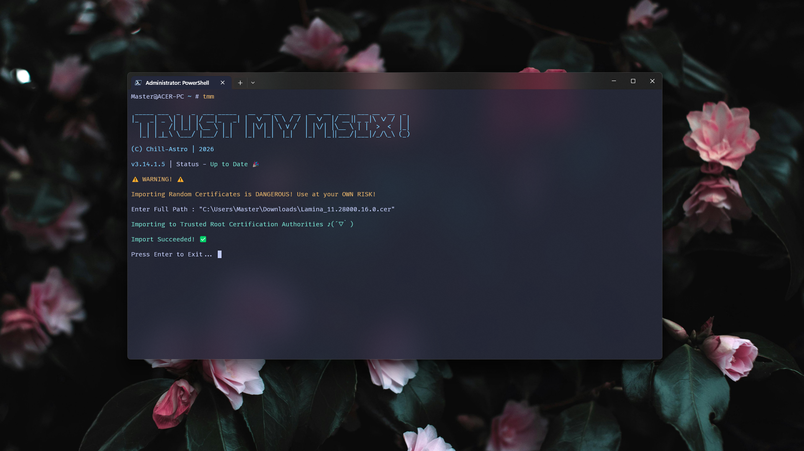
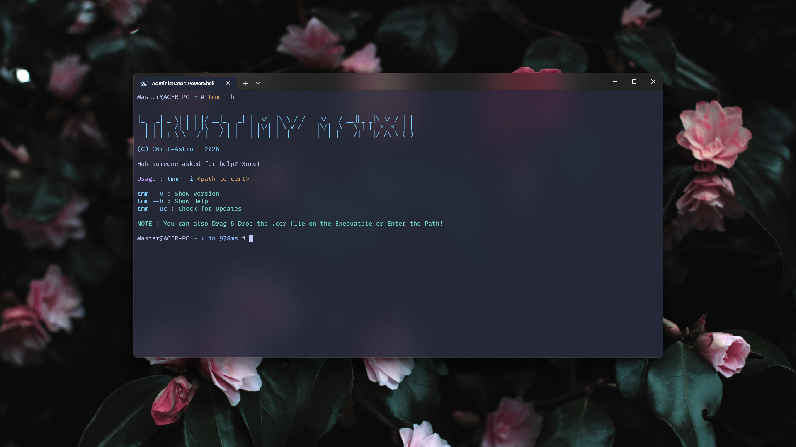
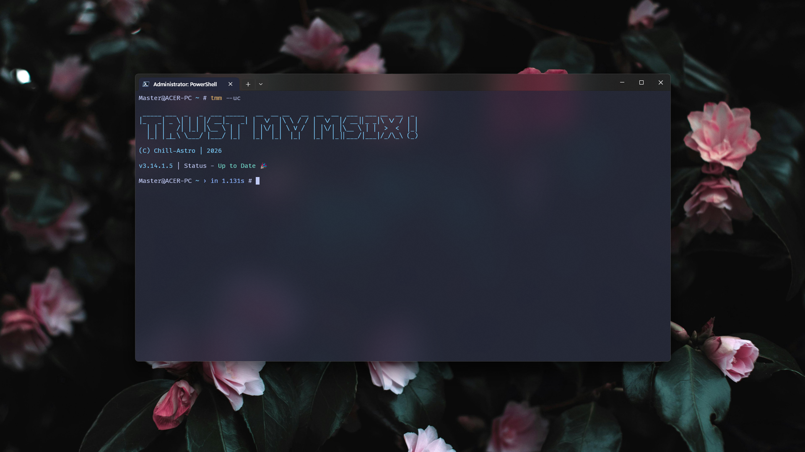

Trust My Msix! is a Simple Command-Line
App designed to import .cer files to the
Trusted Root Certification Authorities Store
in Windows in a few keystrokes! This speeds up the process
of certificate importing for
Self-Signed Msix Packages on Windows.
Key Features
- Extremely Lightweight (Terminal-based). ✓
- Update Checking Support. ✓
- Extremely Quick and Reliable. ✓
- Zero Instructions Needed for Novice Users. ✓
- Supports Arguments for Easy Importing. ✓
- Supports Drag and Drop. ✓
Usage
-
Trust My Msix! can be easily used by just running the Portable
.exe. -
Trust My Msix!'s entire CLI can be bypassed by using the argument
--i:tmm --i <path> # For Installer Version and CMDpython tmm.py --i <path> # if using Python File..\tmm --i <path> # if using Powershell on Portable exe.
Additional Commands:
Help :
tmm --h # For Installer Version and CMDpython tmm.py --h # if using Python File..\tmm --h # if using Powershell on Portable exe.
Version :
tmm --v # For Installer Version and CMDpython tmm.py --v # if using Python File..\tmm --v # if using Powershell on Portable exe.Update Check :
tmm --uc # For Installer Version and CMDpython tmm.py --uc # if using Python File..\tmm --uc # if using Powershell on Portable exe.
Install from Winget
winget install Chill-Astro.TMMBehind the scenes
Transparency is the key. Trust can't exist if Trust My Msix! wasn't Transparent!
-
It uses
certutilon Windows to import.cerfiles. - The following command is used:
certutil -addstore Root <path>Of course making it easier for Newbies is better:
tmm -i <path>This command just saves developer hassle and encourages more hobbyists to make FOSS Apps.